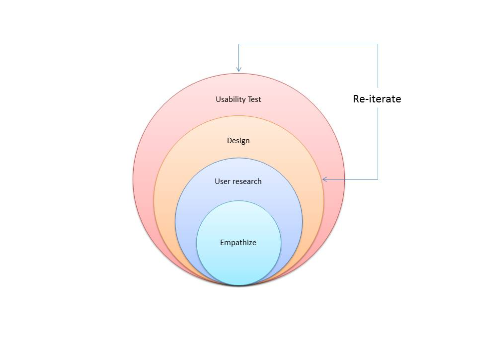
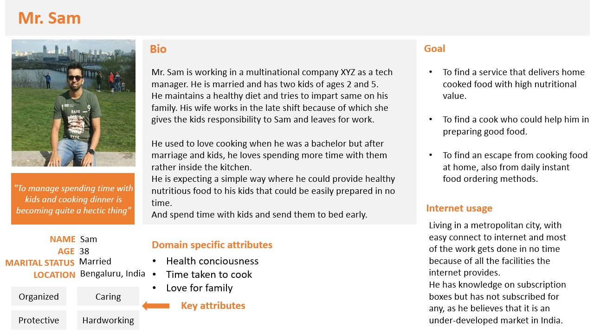

Homecook
Reaching out for home cooked food isn’t hard anymore!
The Idea:
This project is being carried out of personal interest to provide a web application to the users to subscribe for home cooked food for a short or long duration. Also a platform for the home cooks to showcase their culinary skills and earn profit.
Background:
This project was eagerly taken up because I wanted to study more about the subscription box business and it’s advent in Indian market.
My Role
Being a self pitched-in case study I was involved in all the phases from user research to designing screens.
My role was to make a thorough user and market research, have intercept interviews with users, persona and journey map creations, wireframing etc.,
The Process:
Designing an application based on subscription model requires a well defined process including user and market research which includes:

Understanding subscription model
User and market research were 2 most crucial categories to be taken care of:
So what is subscription e-commerce?
Everyone must be aware of ‘Subscription’ as a concept connected to newspapers and magazines.
One takes a weekly/monthly/yearly subscription to a magazine/paper of your choice by paying a set yearly fee.
The basic concept when applied to Ecommerce works in the same way. Only the operating space changes from offline to online.
. . so a subscription website is a site that collects a recurring payment from customers in exchange for on-going, liable service.
Is this the future of e-commerce?
It already is! It is a fast growing market. To be statistical about it, according to prior reports, in just a short amount of time the subscription commerce market is already estimated to be worth around $3 Billion
Looking at the growth and profit earned by companies specified in subscription box model, such as
Most of the established e-commerce companies are getting into this game, to name a few both globally and locally
Indian market:
Today, Amazon claims that India is its fastest growing market for Prime subscription - a sign that the Indian consumer is warming up to subscription model.
“The Indian market is a very demanding one, especially for enterprise software,”says Desmarais.
He believes it will take two years for the market to expand into its full potential in the subscription-based e-retail sector.
Advantages of Subscription boxes:
After thorough competitive analysis, noting down the advantages and painpoints of this model,
- Predictable revenue - Because of subscriptions for long duration, an estimate of the goods required is known even with new customers being added.
- Develop loyal customers - Once the customer has subscribed retain him/her by regular feedback and personalization of the product.
- Publicity for vendors(small scale product vendors)
Painpoints to be considered:
- One time acquisition cost and recurring profit, that’s the beauty of a subscription business.
- In India due to two step verification on recurring payment because of the restrictions by the RBI, customers are afraid to save their credit/debit card numbers and subscribe to something that they end up not liking much.
- Customer retention - Loosing subscribers will be the major risk so the subscription services must focus on maintaining the value of their box, or else customers will start fading out.
Our goal:
By understanding people mind-set on subscription e-commerce system, the Indian market and also by competitor analysis, its drawn that our product needs to be the best value food service for our customers and not a me too in this food delivery service market.
Target users and their requirements
According to a study by McKinsey in February 2018, subscription ecommerce services are popular among young, wealthier populations.
They are more likely to be 24-45 years old, to live in one of the metropolitan cities or nearby.
Criteria for defining stakeholders
Stakeholders invloved (Stakeholders map)
Gathering insights
I chose the method of open-ended questions. This was because I wanted more qualitative data to build on my understanding of the users.
The users I interviewed,
... were bachelors craving for home food
... had a full time job, and no time to self-cook
... had full time job and have kept personal cook at home
... stay with family, who always have home food
... people who order food online almost everyday
... people who have previous experience with subscription model
Insights from users
Explicit needs
Implicit needs
User persona

User journey map
Mapping the requirements to features
Using the persona, the user interviews were reviewed, relevant quotations were used to derive the features that need to be built into the application
The left column lists various important quotations from user interviews. Several quotes were packed into phraseful questions. These are representing the requirements of the user. And on right, the derived features are shown.
Solid lines mean that the feature is directly derived from the requirement, while dashed line shows the implied requirements.
Information Architecture
Once the features were defined, I decided which feature goes on what page, and how the information flows between pages.
Information architecture shows the tap-map, that is, where the user will be navigated when he/she interacts with each features
Hand-drawn wireframes
The process went on by creating multiple wireframes covering most of the tappable screens/scenarios based on the information architecture

Low fidelity wireframes
Started wireframing with home page. Tried multiple options, as feedbacks were recieved on performing usability tests. Tools used: Balsamiq and Adobe XD wireframing kit
Following the same iteration steps some of the final wireframes were formed using Adobe XD:
Final home screen
Being designed using Adobe XD:

Working on the rest of the final screens... More to come soon
My learning
Feeling satisfied and enthusiastic on taking up a UX project which helped me apply many of the UX principles learnt, into real world project. Understood the importance of user and market research because of subscription box model.